Seoul, South Korea
About Seoul
(37.5665° N, 126.9780° E)
Time Zone: Korean Standard Time UTC (UTC+09:00)
Currency: South Korean ‘won’ (1 won = 0.00085 USD).
Seoul is the capital of South Korea.
Seoul is the biggest city in South Korea and is the 2nd largest metropolitan area on Earth.
Seoul has constantly made drastic strides in fields of technology, mechanics, and the entertainment industry.
Climate
Summer is very hot, stuffy, humid, and most prices are at their highest due to this time
being quite popular for travel in Seoul.
The most rainfall of the year falls in July, with more than 375 mm of rainfall.
Hurricanes also have a high chance of taking place during Summer (73°F - 86°F; but feels hotter due to humidity).
Spring has ideal weather and beautiful scenery filled with flowers (42°F - 77°F).
Fall also has incredible weather and the scenery changes to one of the colorful leaves (44°F - 79°F)
Winter is absolutely freezing and dry, filled throughout with snow, snow, and even more snow.
Be prepared to dress incredibly warm. (19°F - 40°F)
Culture
Bowing is a very traditional way to greet and say goodbye to others.
Take off shoes before entering a house.
Avoid putting your feet on any furniture.
Respect your elders or anyone you meet for the first time by using jondaesmal,
a polite way to speak) such as adding -yoh to the end of phrases).
Korean cuisine includes rice, vegetables (such as the common ‘kimchi’), and meat.
Social harmony is quite important for many Koreans, so respect and being able
to decipher others’ feelings in situations is quite helpful.
Use two hands when passing things over.
Avoid pointing with your index finger; it is considered to be very impolite.
Koreans are very understanding when first-timers visit Korea,
so do not stress too much about following these etiquettes.
Landmarks
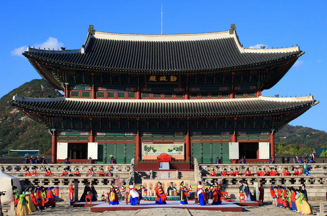
-
Gyeongbokgung Palace
- Gyeongbokgung Palace is a historic royal palace
- that was the main palace during the Joseon Dynasty.
- This palace holds free tours with the museum and gardens.
- It is located in northern Seoul. This palace is closed on Tuesdays
- and is regularly open from 9AM to 6PM the remaining days.
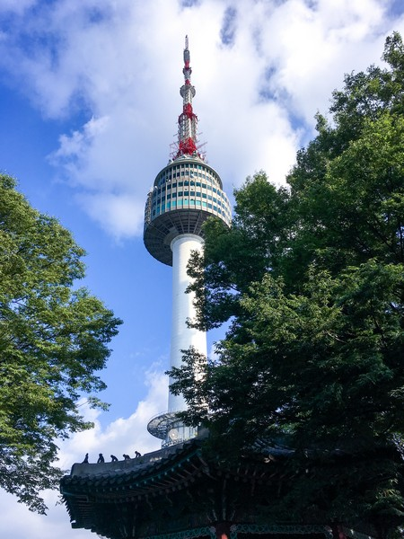
-
Namsan Tower
- Namsan Tower is a 236 meters tall tower that gives a
- remarkable view of the city and houses a restaurant that orbits around.
- This tower is open from 10AM-11PM Sundays to Fridays
- and is open from 10AM-12AM on Saturdays. It is located in central Seoul.
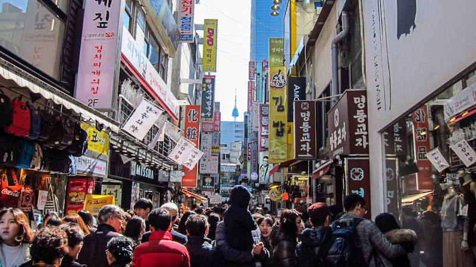
Myeong-dong
- Myeong-dong is a very fast-paced shopping area that has brands from
- around the world, luxury items, and even homemade items and cosmetics.
- One of the major staples of Myeong-dong is the casual food booths that are found throughout this area.
- Some of the popular foods here are traditional Korean ‘boon-shik’ otherwise known as casual Korean
- food like dumplings, ginseng chicken soup, spicy rice cakes, tornado potatoes, and more goods.
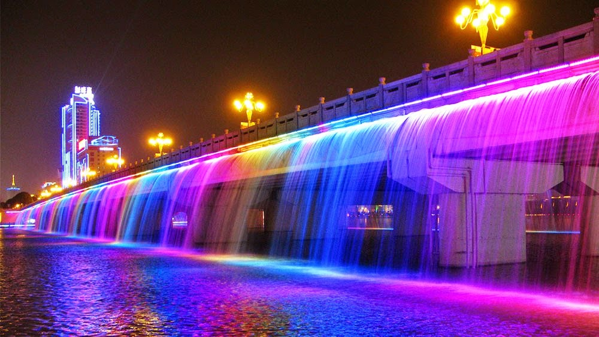
Banpo Bridge
- Banpo Bridge is a large bridge that goes over the Han River and is the first double-deck bridge to be built in South Korea.
- It is a beautiful sight, especially at night when the 380-jet water fountain that pours
- out of the sides of the bridge gets colorfully illuminated.
Restaurants
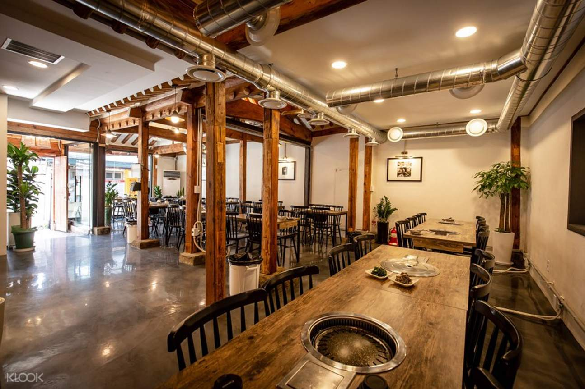
853 $$-$$$
Korean barbecue
|
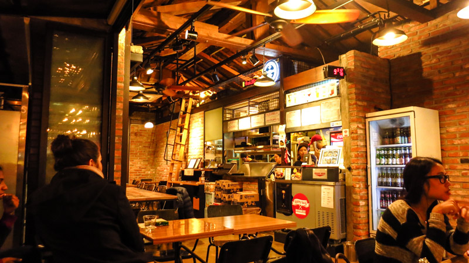
Gusto Taco $$-$$$
Mexican Food
|
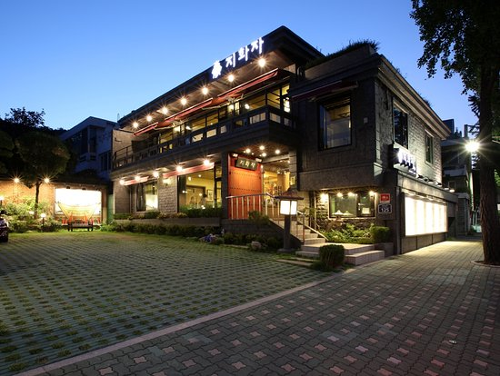
Jihwaja $$$$
Healthy Korean Food
|
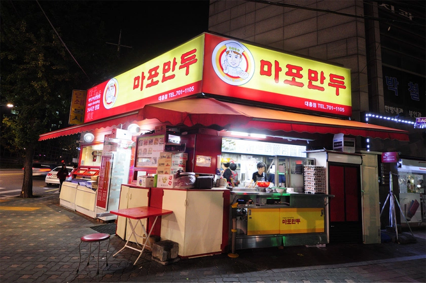
Mapo Mandu
Korean Dumplings and 'Bunshik'
|
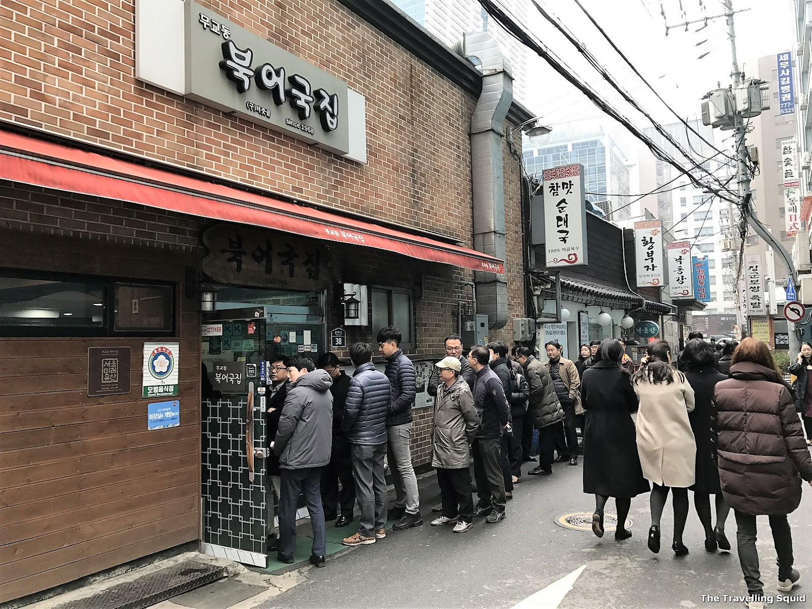
Mugyodong Bugeokukjib $
Beef Bone Soup
|
Hotels
Seoul Shilla Hotel ($$$)
Four Seasons Hotel ($$$)
G2 Hotel ($$)
Hidden Gems
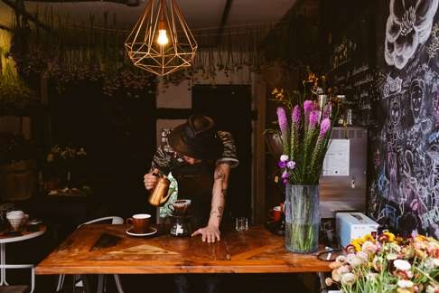
Gyemijib
Gyemijib has incredible chicken and beer (if you are over 20 years old in Korean age),
which is impressively popular in South Korea and has its own name ‘chimek.’
The atmosphere of this location is warm and cozy.
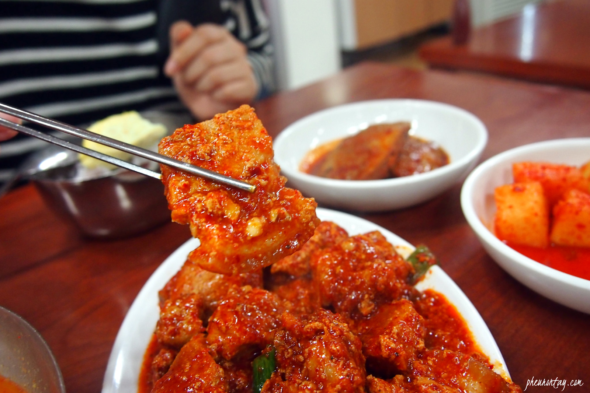
Guldari Sikdang
Guldari Sikdang is very popular and is located near the Gongdeok subway.
Many locals come here for a very traditional, home-cooked Korean meal.
Surprisingly, there are only two dishes on the menu: ‘kimchi jjigae,’ a stew cooked with kimchi, meats, and other vegetables,
and ‘jeyuk bokkeum,’ spicy stir-fried pork. The 40-year-old restaurant truly holds onto its origins and traditions with the spices it carries.